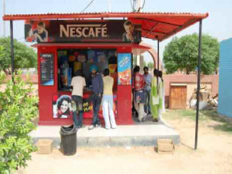
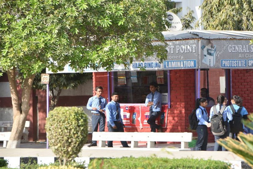
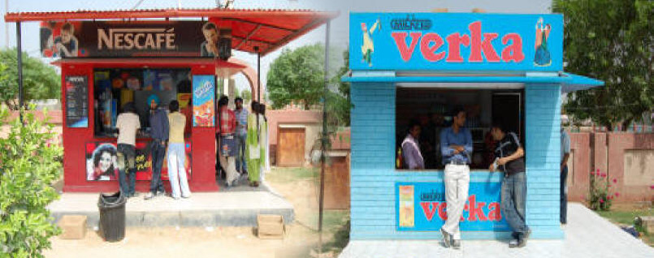

<!DOCTYPE html>
<html lang="en">
<head>
    <meta charset="UTF-8">
    <meta http-equiv="X-UA-Compatible" content="IE=edge">
    <meta name="viewport" content="width=device-width, initial-scale=1.0">
    <link rel="stylesheet" href="css/style.css">
    <title>Food Safety Bank</title>
</head>
<body>
   <nav class="navbar background">
    <ul class="nav-list">
        <li><a href="#home">Home</a></li>
        <li><a href="#information">Information</a></li>
        <li><a href="#Features">Features</a></li>
        <li><a href="#Canteen Management">Canteen Management</a></li>
        <li><a href="#contact">Contact Us</a></li>      
    </ul>
    <div class="rightNav">

    <input type=" text" name="seach" id="search">
    <button class="btn btn-sm">Search</button>
    </div>
   </nav> 
   <section class="background firstSection">
    <div class="box-main">
        
    </div>
    </div>  
</section> <section class="section"> 
   
    <div class="paras">
  </div>
</section> 
 <h1 class="text-center">Information</h1>
      <p class="sectionTag">College Canteen</p>
      <p class="sectionSubTag">A college canteen is a restaurant set up in the college campus to supply food and drink to its students and teachers. Our college begins at 8 am and ends at 4 pm. Most of the students have practical classes of different subjects. We have to stay longer. So it is not possible to pass this long period without taking any snack or tiffin. Moreover sometimes teachers and students come to college without taking breakfast. Here lies the necessity of our college canteen. It is housed in the ground floor of the main building. It is very spacious, neat and clean. The seating arrangement is very fine. There are many chairs and tables to sit and enjoy food. Hot tea, coffee, loaves of bread, banana biscuits, sweets and various kinds of handmade snacks are available. There are two cooks and more some two or three boys to serve us. A manager sits behind the cash box and receives money. During the off period we go there and take tea or coffee and other light tiffin. Thus we remove our tiredness and gain energy. It is a place of rest, friendship discussion and recreation. For all these reasons our college canteen is very favorite to us.
      </p>
      </div>
      <div class="thumbnail">
        
    </div>

<section class="section section-left">
    <div class="paras">
      <p class="sectionTag"> </p>
      <p class="sectionSubTag">It is true that a college canteen is a restaurant set up on the campus of a particular college. It supplies food and drinks to its students and teachers. Our college canteen is situated on one side of the college campus. Most of the students have classes from 10 a.m. to 5 a.m. At that time we, feel the necessity of having some refreshments. So our college canteen is very necessary for us. It supplies rice, curry, and various delicious dishes. It also supplies tea, coffee, and loaves and sweets to the students and teachers. There are some chairs and tables in the canteen. There are two cooks and two or’ three waiters to serve the customers. A manager sits behind the cash box to collect money from the customers. Our college canteen is also a favorite haunt for recreation for us. We often go to it and pass a merry time in gossiping. Sometimes we also hear hot discussing of our would-be politicians in our college canteen. At present we are trying our best to keep our college canteen free from politics. However, our college canteen is very beneficial for us. Its importance is very great to all of us.</p>
      </div>
      <div class="thumbnail">
        
    </div>
</section>
 <div class="paras">
      <p class="sectionTag"> </p>
      <p class="sectionSubTag">A college canteen is the part and parcel of a college. It is the storehouse of food. Every college has a canteen. So, our college has also a canteen which is very rich. There is a big flower garden in front of our college canteen. Our college canteen is very large. A college canteen is a restaurant that supplies food and drinks to its students and teachers. The food and snacks supplied by outside restaurants are usually substandard and injurious to health. So, students can get hygienic food in the college canteen. Our college canteen is situated in the middle of the college. Students of all departments can go there whenever they need. The canteen is clean and there are a few students who remain in charge of keeping it clean. Some instructive posters are hung on the wall. Snacks of all types are sold here. Even tea and soft drinks are available here. The canteen is a favorite to me because I like its clean environment and systematic service. It plays an important role in our college life. Students often discuss topics of their texts over a cup of tea in the college canteen. They thus utilize their leisure time in the canteen in a productive way.</p>
      </div>
      <div class="thumbnail">
        
    </div>
</section>
   <section class="Features" id="Features">
    <h3 class="text-center">Features</h3>
    <div class="firstHalf0">
    
        <p>Fix Menu (Quantity and Item fix in each time zone)
            In this set-up, both quantity and the number of items are fixed as per the company’s policy. For example, if it’s lunchtime, the employee will get a fixed slip of 1 plate lunch. It varies as per the company’s requirements. Moreover, the Two-One menu is fixed and the other is selectable i.e.
            Fix Quantity- In this, the number of items is fixed but the choice of the item can be decided by the employee.
            Fix Item – The list of items would be fixed. This will be as per the rules of the company.
            But quantity can be selected by the employee.
        </p>
    </div>
        </section>
        
       
        <section class="Canteen Management">
            <h3 class="text-center">Canteen Management</h3>
            <div class="paras">
                <p class="orgTag">1. "Effective Management"</p>
                <p class="orgsubTag">The current system in schools/college canteens involves waiting in line to pay for food during a designated break time. However, this creates issues as 
                    all students rush to the canteen simultaneously, causing inconvenience for both the canteen staff and students. Additionally, due to time constraints, some 
                    students may not be able to eat or may end up wasting their food. To address these challenges, the E-Canteen Management system has been developed 
                    to streamline the process. Through this system, students can order their food via their phones in advance from a website. Users must enter their college 
                    email ID to access the e-menu and make payments. This method allows the college to monitor canteen transactions and detect any fraudulent activities. 
                    As soon as an order is placed, the kitchen staff receives an alert to begin preparing the food. This digitalization of the canteen system improves service 
                    delivery and reduces waiting time. The e-menu card contains detailed information about the food items available, and customers can select and pay for 
                    their desired items. The canteen staff receives information about the order immediately, allowing them to prepare the food in advance. Customers can 
                    collect their food 
                    without waiting in queues. The online system allows for easy updates and deletions of menu items. Regular customers can be recognized and their data 
                    stored in the database. The security of data is ensured through encryption and server databases of the institution. Ultimately, the Canteen Management 
                    System revolutionizes the traditional approach to canteen management, making the process more efficient and user-friendly
                    </p>
            </div>
            
        </section>
        <section class="organizations org-left">
            <div class="paras">
             <p class="orgTag">2. "Role of College Council"</p> 
            <p class="orgsubTag">Purpose A school canteen can serve as an important setting for nutrition and health promotion. The purpose of this paper is to describe secondary school students’ perceptions of Indian school canteens. Design/methodology/approach Convenience sampling informed the recruitment of 1,026 year 9 students from nine private schools in Kolkata, India, and data were collected through self-completion of paper-based questionnaires. Frequencies and χ² analyses were computed. Findings The school children reported that energy-dense, nutrient-poor foods like French fries (90.4 per cent), pizza (79.5 per cent) and cakes (69.2 per cent) were frequently available in the school canteens. However, only a few students (10.2 per cent) acknowledged the availability of nutritious foods like fruits. Only a small proportion of students were content with the nutritional quality of food supplied in the canteens (3.6 per cent), the cost of food (8.7 per cent) and availability of fresh foods like fruits (5.5 per cent). The provision of healthy foods in the school canteen was supported by two-thirds of the respondents (65.9 per cent); however, only a small proportion (18.3 per cent) supported the restriction of fried foods in school canteens. Practical implications These findings underscore the need for the design and implementation of healthy school canteen policies to foster healthy eating habits among Indian adolescents. Originality/value This is the first cross-sectional survey to investigate the views of adolescents regarding school food services in the Indian context.
            </p>
            </div>
               
        </section>
        <section class="organizations org-right">
            <div class="paras">
                <p class="orgTag">3. "Stock Management"</p>
                <p class="orgsubTag">Genius ERP System's Canteen Management System is an all-in-one solution for your hostel, school or college canteen. Our Canteen Management Software provides comprehensive Inventory and Order Management Software, making it easy to keep track of stock levels and process orders efficiently. In addition, with the help of our Cafeteria Management System and Hostel Canteen Management Software, you can improve the overall canteen experience for students and staff by managing the menu, setting pricing and offering promotions and discounts.

                    Our Online Canteen Management System enables you to offer an efficient, cashless payment system for meals, where parents and guardians can top-up their child's account and monitor their spending. With the help of our Canteen Inventory Management System, you can efficiently manage inventory and prevent wastage of food items. With our School Canteen Management System and College Canteen Management System, it becomes easy to generate real-time reports on sales, inventory and orders, making it easier to monitor the overall performance of the canteen. Our Canteen Management System Software is a one-stop solution for managing your hostel, school or college canteen.
                </p>
            </div>
                    
        </section>
        
        <section class="organizations org-left">
            <div class="paras">
                <p class="orgTag">4. "Financial Management"</p>
                <p class="orgsubTag">Financial management is an important component of both the personal and professional lives of everyone around. It entails controlling and making financial decisions to attain specified goals and objectives. This discipline assists individuals and organizations in making prudent financial judgments, allocating resources efficiently, and making informed financial decisions.

                Maximizing wealth is the fundamental goal of financial management, whether for an individual, a business, a government agency, or a nonprofit organization. Let’s examine the numerous methods of financial administration in detail.Corporate financial management is concerned with the financial decisions made inside a company or corporation. These decisions are crucial to the company’s long-term viability and growth. The following are important areas of corporate financial management:

                Capital structure: The company’s funding sources, namely debt and equity, are referred to as its capital structure. The financial manager must choose the best combination of costs and profits to yield profit.
                Investment Decisions: Financial managers make investment decisions, such as whether to enter new markets, buy assets, or introduce new products.
                Dividend Policies: Decisions on dividend payments to shareholders are critical in business financial management. This includes deciding when and how much to distribute and how much to save for reinvestment.
                Risk management: Risk management is critical for protecting the company’s value and financial health by managing financial risks such as currency fluctuations or interest rate changes.
                </p>
            </div>
        </section>
               
        <section class="organizations org-right">
            <div class="paras">
                <p class="orgTag">5. "Staff And Volunteers"</p>
                <p class="orgsubTag">The purchase of goods is a significant 
                    canteen expense and therefore it is critical 
                    that this process is organised and efficient. 
                    It is important to:
                    buy products at the best price
                    buy appropriate quantities
                    ensure safe, high-quality products
                    order at the appropriate time.
                    Who should be responsible for 
                    ordering stock?
                    Only one person in the canteen should be 
                    responsible for ordering stock, which includes 
                    foods, drinks, packaging, utensils, first aid and 
                    cleaning materials. Ideally this will be the canteen 
                    manager, or a person who oversees most of the 
                    canteen and has the largest time involvement. 
                    Allocating this responsibility to only one person 
                    is important as it prevents confusion and overordering, maintains consistency and ensures 
                    maximum efficiency.
                    Canteens generally return higher profits when 
                    they restrict the number of suppliers and range 
                    of stock.
                    Restricting the number of suppliers can be 
                    beneficial as it allows canteen staff to develop 
                    management rapport with a supplier. This can also 
                    result in special services and treatment, such as 
                    discounts and better quality of service.
                    Minimising the range of stock assists in reducing 
                    slow turnover items, which can lead to spoilage. 
                    It will also allow you to use employees and 
                    volunteers with less training given there are less 
                    products to work with.
                    Both of these practices will also result in more 
                    efficient ordering with fewer orders needing to 
                    be placed.
                    It is important to ensure that when minimising the 
                    range of stock in a canteen the range and variety 
                    of nutritious foods, such as fruit and vegetables, 
                    is not reduced.</p>
            </div>
          
        </section>
        <section class="organizations org-left">
            <div class="paras">
                <p class="orgTag">6. "General Business Structure of canteen"</p>
                <p class="orgsubTag">School canteens may operate under a variety 
                    of management structures, depending on 
                    the individual characteristics and needs of 
                    the school. Most canteens in schools are run 
                    under the direction of, and are accountable 
                    to, the school council. Schools may decide 
                    to provide a food service to students in 
                    several ways.
                    Scenario 1: Full-time paid canteen manager 
                    plus paid staff and/or volunteers
                    The canteen manager is present at all times and 
                    their work is supported by paid staff and possibly 
                    volunteers.
                    Scenario 2: Part-time paid canteen manager 
                    plus volunteer staff
                    The canteen manager will attend the canteen in 
                    the morning to allocate tasks to volunteer staff, 
                    and return in the afternoon to finish operations for 
                    the day.
                    Scenario 3: Fully staffed by volunteers
                    The canteen is staffed by a volunteer canteen 
                    manager with volunteer staff. It may alternatively 
                    be staffed by a group of volunteers, each of whom 
                    is rostered and responsible for the operation of 
                    the canteen on particular days.
                    Scenario 4: External food services management 
                    company
                    Management of the canteen is contracted to an 
                    external food services management company, 
                    which is responsible for staffing the canteen.
                </p>
            </div>
          
        </section>
        <section class="organizations org-right">
            <div class="paras">
                <p class="orgTag">7. "Heifer International"</p>
                <p class="orgsubTag">Founded in 1944, the mission of Heifer International is to empower people and help them escape poverty. Part of the way they do this is by donating livestock such as cows, goats, and chickens, or funding similar programs. By focusing on building up local economies, Heifer International's approach is to help those increase their income and assets, bolster food security and nutrition, and improve environmental sustainability.

                    Through the program "Passing on the Gift," each project participant passes on their animal's first female offspring, training another family in need on how to care for the livestock, multiplying the benefit.</p>
            </div>
            <div class="thumbnail0">
                 
            </div>
        </section>
        <section class="organizations org-left">
            <div class="paras">
                <p class="orgTag">8. "Promotion And Marketing"</p>
                <p class="orgsubTag">It is important to maintain the lowest level of stock 
                    while at the same time having sufficient stock to 
                    use or sell. This reduces the risk of stock spoiling 
                    while in storage and also allows the canteen 
                    to potentially be earning interest on money in 
                    the bank instead of invested in stock sitting on 
                    shelves. It is also important to aim to have as little 
                    stock as possible left over by the end of term to 
                    prevent spoilage over term holidays.
                    How often your canteen needs to order stock will 
                    depend on: 
                    how long it takes for the supplier to deliver 
                    the order
                    how regularly your supplier delivers – rural 
                    schools or canteens using infrequent suppliers 
                    may need to order products with a longer 
                    shelf life
                    the shelf life of the product – order less 
                    items more frequently to reduce wastage 
                    of perishable stock and aim to use fresh fruit 
                    and vegetables by the end of the week to 
                    prevent spoilage and decrease in quality over 
                    the weekend
                    storage space – this will vary according to 
                    seasons, for example refrigeration will be used 
                    more during warmer weather, so more regular 
                    ordering of chilled items may be required 
                    at this time.
                    Check the stock currently in the canteen. By using 
                    an ordering list containing information on each 
                    supplier and their products, you can quickly view 
                    current stock and record what items need to be 
                    reordered. Keep a record of all orders and note 
                    when it was requested.</p>
            </div>
           
        </section>
        <section class="contact" id="contact">
            <h2 class="text-center">Contact Us</h2>
            <form action="" method="post">
                <div class="form">
                    <input type="text" name="name" id="name" placeholder="Enter your name">
                    <input type="text" name="phone" id="phone" placeholder="Enter your Phone">
                    <input type="text" name="email" id="email" placeholder="Enter your email">
                    <input type="text" name="mobile no." id="mobile no." placeholder="Enter your mobile no.">
                    <input type="text" name="city" id="city" placeholder="Enter your city">
                    <input type="text" name="state" id="state" placeholder="Enter your state">
                    <button class="btn">Submit</button>
                </div>
            </form>
           </section>
        </section>
        <section class="thanks">
            <div class="Image">
            <!--  -->
        </div>
    </section>
</body>
</html>
